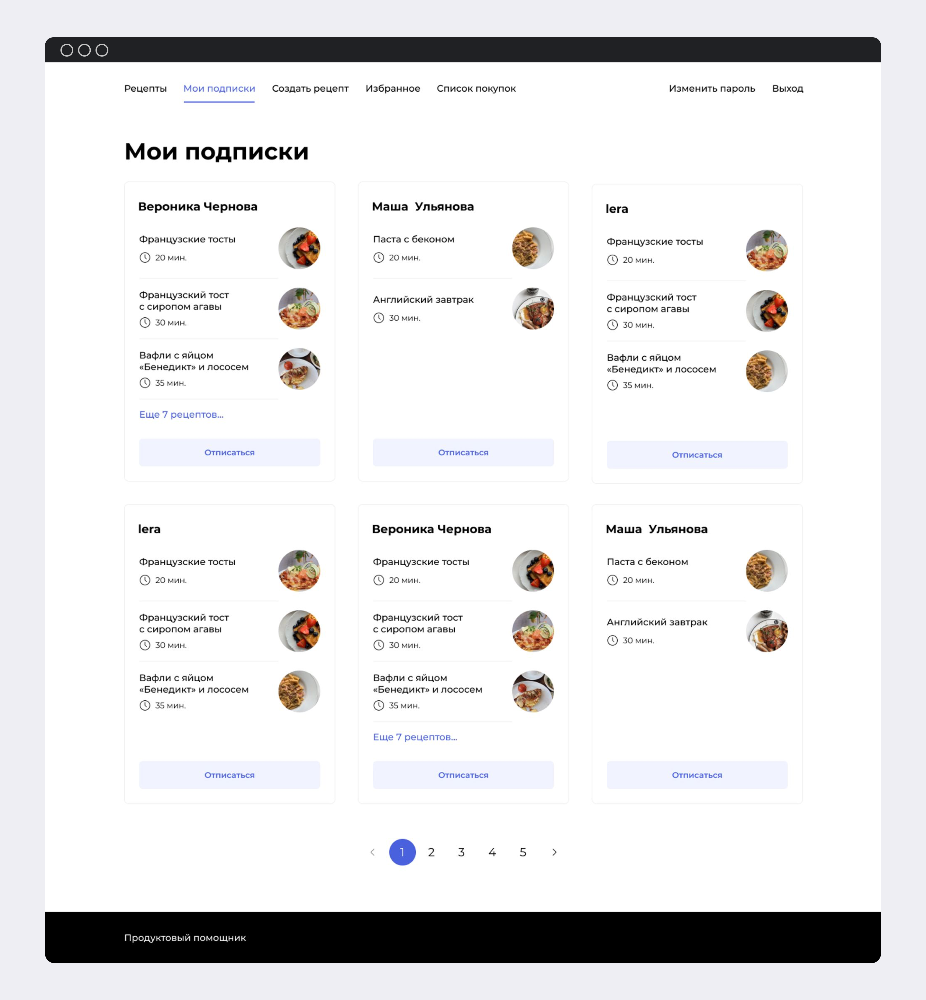
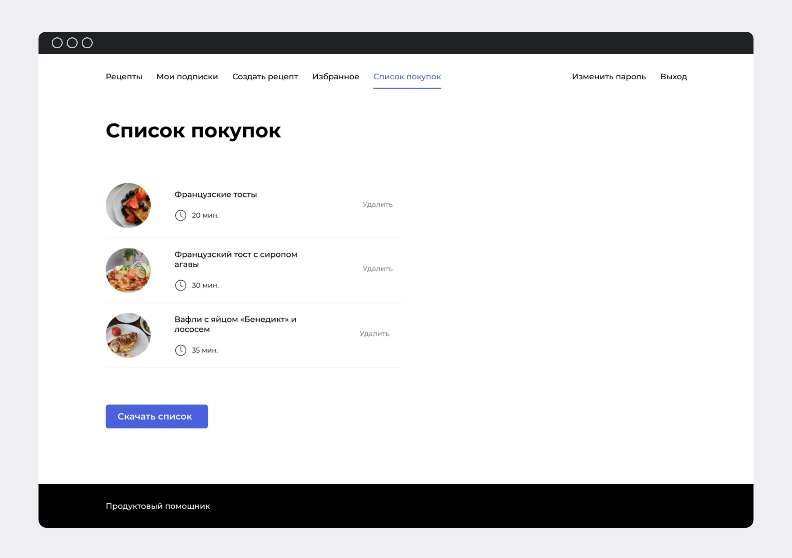

Microservices-Based Streaming Platform
A scalable, modular platform designed to simulate the core
architecture of modern streaming services (e.g., Netflix, YouTube).
Asynchronous API — Handles client requests efficiently with non-blocking communication for smooth user experience.
Recommendation System — Provides personalized movie suggestions using a dedicated Recommendation Service API and core recommendation logic.
ETL Pipelines — Extract, transform, and load movie and user interaction data; index results in Elasticsearch for fast search and use Redis for caching.
Relational Databases — PostgreSQL stores structured data across services: movies, user-generated content, and recommendation metadata.
Containerized Architecture — Each service runs in an isolated container via Docker Compose, enabling independent scaling, easier debugging, and clear modularity.
Web Recipe Assistant
A web app for sharing and discovering recipes. Users can publish dishes, save favorites, follow authors, and generate shopping lists.
Tech Highlights:
1. REST API with role-based access
2. Automated CI/CD: linting (PEP8 via flake8), Docker image build & push, remote deployment, and Telegram notifications
3. Backend & frontend fully containerized with Docker
User's page

Subscriptions page
Shopping list page
Link Shortener Service
Link Shortener Service
A web service for mapping long URLs to short, user-friendly ones — either custom-defined or auto-generated.
Key Features:
1. Generate short links linked to original URLs
2. Redirect users to the original address via short links
3. Full REST API support
Telegram Bot for Design Students (Collaborative project)
Microservices-based system for student collaboration and feedback management, deployed in a fully containerized environment.
Features & Highlights:
1. Telegram Bot for student interactions (pair matching, feedback, complaints).
2. PostgreSQL + Adminer for relational data management.
3. Celery + Redis for task scheduling and queue processing (e.g., meeting reminders, feedback collection).
4. Ngrok for webhook support.
Monitoring & Observability: Promtail + Loki + Grafana for log aggregation and visualization.
Data Model:
1. Student profiles (status, specialization, rating, ban logic).
2. Matched pairs with meeting status tracking.
3. Feedback & complaint management with admin review.
4. Dynamic rating system balancing first impressions and cumulative feedback.
Impact:
Automated student pairing and evaluation process.
Improved community engagement.
Provided scalable monitoring with Grafana dashboards.